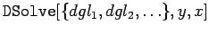

Inhalt Index DeskTop Bronstein

 Computeralgebrasysteme Anwendungen von Computeralgebrasystemen Differential- und Integralrechnung Mathematica
Computeralgebrasysteme Anwendungen von Computeralgebrasystemen Differential- und Integralrechnung Mathematica


Mit Mathematica können gewöhnliche Differentialgleichungen symbolisch behandelt werden, wenn eine Lösung in geschlossener Form prinzipiell möglich ist. In diesem Fall liefert Mathematica in der Regel die Lösung. Die hierfür zutreffenden Befehle sind in der folgenden Tabelle aufgelistet.
| löst eine evtl. implizite Darstellung der Lösung der Differentialgleichung nach y[x] auf (falls möglich) | |
| liefert die Lösung der Differentialgleichung in Form einer reinen Funktion | |
|  | löst ein System gewöhnlicher Differentialgleichungen |
Die Lösungen werden (s. Unterkapitel Gewöhnliche Differentialgleichungen) mit den entsprechenden willkürlichen Konstanten C[i] als allgemeine Lösungen dargestellt. Anfangswerte oder Randbedingungen können in den Teil der Liste, der die Gleichung bzw. Gleichungen enthält, mit eingefügt werden. In diesem Falle erhält man eine spezielle Lösung.
Als Beispiele sollen hier zwei Differentialgleichungen aus Abschnitt Wichtige Integrationsmethoden im Unterkapitel Gewöhnliche Differentialgleichungen 1. Ordnung betrachtet werden.
| Beispiel A |
|
Es ist die Lsung der Differentialgleichung zu bestimmen. Verlangt man, daß die Lösung für y[x] bestimmt wird, dann liefert Mathematica |
| Beispiel B |
|
Es ist die Lösung der Differentialgleichung y'(x)x(x-y(x))+y2(x) = 0 zu bestimmen. : Inverse Functions are beeing used. Values may be lost... In solchen Fällen kann man nach numerischen Lösungen suchen. Auch im Falle der symbolischen Lösung von Differentialgleichungen darf man wie bei der Berechnung unbestimmter Integrale Mathematica nicht überfordern. Wenn die Resultate nicht als algebraischer Ausdruck elementarer Funktionen darstellbar sind, bleibt nur der Weg, numerische Lösungen zu suchen.
|
Hinweis: Mit können auch partielle Differentialgleichungen gelöst werden.